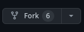

Creating With Git
This repository and book serves as the instructional material and work template for the course "Creating With Git" on The Taggart Institute.
Setup
GitHub Account and SSH Key
For our work in this course, you'll need a GitHub account. Sign up for one if you don't have one; it's free!
If you have an objection to using GitHub for one reason or another, that's fine. If you know enough to have reasons to not like GitHub, you probably know enough to modify the instructions to use a Git host you prefer.
To best use GitHub the way we intend, we need to connect an SSH key to it. This will serve as our authenticaiton method to GitHub in the terminal.
If you know what an SSH key is and have one already, you can skip this part. For everyone else, let's check if you do have one. In your terminal (on Linux and macOS), run the following command:
cat ~/.ssh/id_rsa.pub
For Windows PowerShell users, you can run:
cat ~/_ssh/id_rsa.pub
If you get output, that's your SSH public key! That's what we'll need for the next step. If you didn't get anything, then for all operating systems, you're running:
ssh-keygen
For now you can just breeze through the process. Add a passphrase if you like, but make sure you remember it! Then run the appropriate cat command above to get the public key available for some copypasta.
Now, navigate to https://github.com/settings/keys and click "New SSH key."
Name it whatever you like. I tend to name it after the computer I generated it on. Copy and paste the public key from the terminal into the "Key" text area and make sure the "Key type" remains "Authentication Key."
Click "Add SSH key," and your account is all set to work correctly!
Get This Repo
As this is an instructional repo on the use of Git, we'll be forking, then cloning this repo to use it.
Head over to, well, this. https://github.com/The-Taggart-Institute/creating-with-git.
Fork the repo to your account with this button:

With your very own copy of the repo, clone it down by copying the URL and then heading over to your terminal and typing:
git clone git@github.com:your-github-account/creating-with-git.git
If you added a passphrase to your SSH key, you'll be prompted for it. Type it in and press Enter, although you won't see any visual confirmation of keystrokes.
We'll learn more about what clone actually means later, but for now, hey! You have your very own copy of this repo. Get in there.
cd creating-with-git
Install Requirements
This project uses honkit, which is a Node package. That means we need to have Node/NPM installed. head over to NodeJS for details on installing Node/NPM for your platform. The LTS version will do fine. Once it's all installed, run the following in our repo:
npm i --dev
This'll install everything we need to run Honkit. You can give it a try by running the following command:
npx honkit serve
That should launch local web server that serves up the website version of this repo on http://localhost:4000. Check it out!
Usage
As you go through the course, use the material here as supplemental reading, as well as a starting point for your own documentation. At several points, you'll find parts that you'll be asked to fill in to complete your very own resource for Git documentation! As you do, make commits with your own changes, and consider publishing them for yourself!